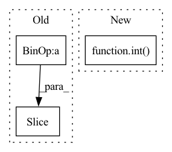

Pattern ID :25296

Before Change
def unpack(self, payload):
sender = int(payload[self.id_size - 1]) // id_size=1 as default
header = MessageCode(int(payload[1]))
serialized_parameters = payload[self.id_size +
self.header_size:]
// TODO: header_size = 1 as default, so only return the first header
return sender, header, serialized_parameters
After Change
def unpack(self, payload):
sender = int(payload[0])
header = MessageCode(int(payload[1:self.header_size]))
serialized_parameters = payload[self.header_size:]
return sender, header, serialized_parameters
In pattern: SUPERPATTERN
Frequency: 3
Non-data size: 3
Instances
Fragment ID: 77205806
Project Name: smilelab-fl/fedlab
Commit Name: 8705ae157c73a9774cc41dd4dd949a22f1451c6c
Time: 2021-04-21
Author: 928255708@qq.com
File Name: fedlab_core/message_processor.py
M Class Name: MessageProcessor
N Class Name: MessageProcessor
M Method Name: unpack(2)
N Method Name: unpack(2)
M Parent Class: object
N Parent Class: object
M File Name: fedlab_core/message_processor.py
N File Name: fedlab_core/message_processor.py
M Start Line: 47
M End Line: 50
N Start Line: 67
N End Line: 69
'>
Before Change
item_id = item_id[len(item_id.split("/")[0]) + 1:]
bbox_count = lines[image_id + 1]
bbox_lines = lines[image_id + 2 : image_id + int(bbox_count) + 2]
for bbox in bbox_lines:
bbox_list = bbox.split()
if 4 <= len(bbox_list):
After Change
image=image_path, annotations=annotations)
try:
bbox_count = int(lines[line_idx + 1]) // can be the next image
except ValueError:
continue
'>
Fragment ID: 77205807
Project Name: openvinotoolkit/datumaro
Commit Name: 22728f23e850b31562cdb5da80cd34722a091574
Time: 2021-03-19
Author: maxim.zhiltsov@intel.com
File Name: datumaro/plugins/widerface_format.py
M Class Name: WiderFaceExtractor
N Class Name: WiderFaceExtractor
M Method Name: _load_items(2)
N Method Name: _load_items(2)
M Parent Class: SourceExtractor
N Parent Class: SourceExtractor
M File Name: datumaro/plugins/widerface_format.py
N File Name: datumaro/plugins/widerface_format.py
M Start Line: 68
M End Line: 115
N Start Line: 69
N End Line: 100
'>
Before Change
def apply_mask_2_image(image, mask, width, height):
// mask = vv[0]
mask = mask[- width * height:].reshape(width, height, 1)
mask = tf.image.resize(mask / mask.max(), image.shape[:2]).numpy()
return (mask * image).astype("uint8")
After Change
def apply_mask_2_image(image, mask):
if len(mask.shape) == 1:
width = height = int(np.sqrt(mask.shape[0]))
else:
height, width = mask.shape[:2]
mask = mask.reshape(width, height, 1)
mask = tf.image.resize(mask / mask.max(), image.shape[:2]).numpy()
'>
Fragment ID: 77205812
Project Name: leondgarse/keras_cv_attention_models
Commit Name: d9f3514af2dab63a76a19ae7bd998a730a9cfd07
Time: 2021-11-26
Author: leondgarse@gmail.com
File Name: keras_cv_attention_models/visualizing.py
M Class Name: AnonimousClass
N Class Name: AnonimousClass
M Method Name: apply_mask_2_image(2)
N Method Name: apply_mask_2_image(4)
M Parent Class:
N Parent Class:
M File Name: keras_cv_attention_models/visualizing.py
N File Name: keras_cv_attention_models/visualizing.py
M Start Line: 220
M End Line: 222
N Start Line: 221
N End Line: 225